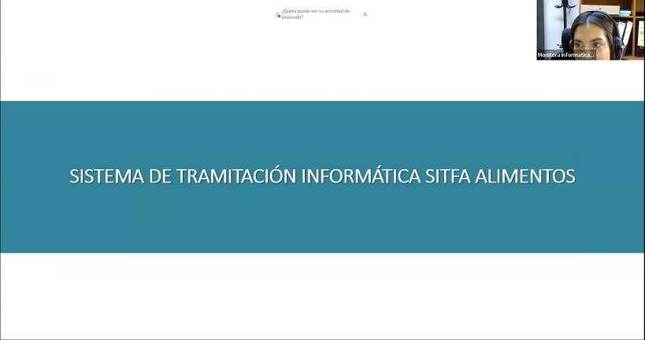

Copiapó, 27 de junio de 2025 – Con el objetivo de reforzar los conocimientos técnicos y operativos de los funcionarios judiciales, se llevó a cabo una capacitación telemática sobre la tramitación de causas de alimentos en el sistema SITFA (Sistema de Tramitación Informática Familia).
La actividad fue impartida por Carolina Moreno M., quien guió la jornada con una visión general del proceso de tramitación de causas de alimentos, poniendo especial énfasis en la correcta aplicación de las distintas nomenclaturas disponibles en la plataforma. Además, se presentaron las últimas mejoras implementadas en SITFA, orientadas a facilitar la labor diaria y optimizar la gestión judicial en materia de familia.
La capacitación se enmarca dentro de las acciones formativas que buscan mejorar la eficiencia y estandarización de los procedimientos en el Poder Judicial, asegurando una utilización adecuada y actualizada de las herramientas informáticas institucionales.
“Instancias como esta permiten mantener al día los conocimientos de los funcionarios, asegurando un uso efectivo del sistema y una mejor atención a los usuarios del servicio judicial”, señaló Carolina Moreno.
Este tipo de actividades demuestra el compromiso institucional con la capacitación continua y el perfeccionamiento profesional, pilares fundamentales para enfrentar los desafíos de la transformación digital en el ámbito judicial.
